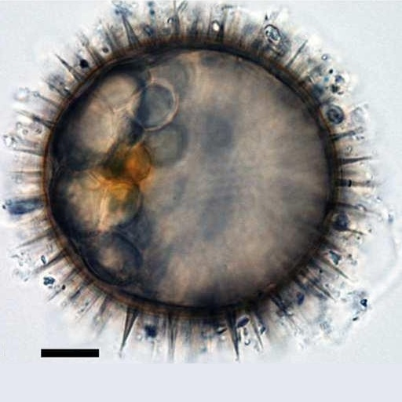
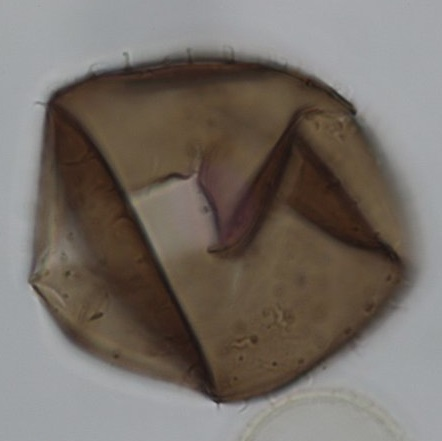

CYSTS LIST
- Alexandrium
- Archaeperidinium/RBSC
- Brigantedinium/Protoperidinium
- Diplopsalopsis/Protoperidinium
- Dubridinium
- Gymnodinium
- Impagidinium
- Lejeunecysta
- Nematosphaeropsis
- Peridinioids
- Polykrikos
- RBSC/Protoperidinium
- Selenopemphix
- Spiniferites
- Stelladinium
- Transparent/Hollow
- Transparent/Solid
- Transparent/Spherical
- Trinovantedinium
- Votadinium
ROUND BROWN SPINY CYSTS/PROTOPERIDINIUM
In recent years, further incubation studies have demonstrated more of these relationships for the genus Protoperidinium (e.g. Matsuoka et al., 2006b; Kawami and Matsuoka, 2009). Some of these cysts are distinctly round in shape, spine bearing and brown in color; they are therefore called spiny round brown cysts. Two cyst-based genera have been erected to classify these species. The first, Echinidinium, was erected by Zonneveld (1997). These cysts open with a theropylic archeopyle (i.e., an angular slit that follows paraplate boundaries but without complete release of plates) (Matsuoka, 1988; Head et al., 2001). The second, Islandinium, was erected by Head et al. (2001) and opens with a saphopylic archeopyle (i.e., having a free operculum) (Matsuoka, 1988).(Mertens et al., 2012). Some gropus of taxa are challenging from a taxonomic perspective and their discrimination during routine counting for quantitative analyses can be difficult. This is the case for specimens informally designated as round brown spiny cysts (RBSCs), which represent brown cysts with a spherical central body bearing numerous non-tabular spines (processes) distributed more or less randomly. The motile-stage counterparts of RBSCs are still poorly documented although some work on genetics and cyst-theca relationships have shown that RBSCs are produced by Archaeperidinium saanichi (Mertens et al., 2012), Oblea acanthocysta (Kawami et al., 2006), Polykrikos hartmannii (Matsuoka and Fukuyo, 1986), "Protoperidinium canadiensis" (Potvin et al., 2010), Protoperidinium minutum (Ribeiro et al., 2010), Protoperidinium monospinum (Zonneveld and Dale, 1994), and Protoperidinium tricingulatum (Kawami et al., 2009).
Central body surface |
Processestips/form |
Remarks |
Species |
Central body (um.) |
Processes (um.) |
Image |
Smooth |
AcuminateHollow |
Central body largeand zigzag archeopyle |
cyst of Oblea acanthocysta | 30 to 53 |
1 to 8 |
|
Smooth |
AcuminateHollow |
Central body smallEntirely hollow processes |
Echinidinium delicatum | 17 to 25 |
2 to 4 |
|
Smooth |
AcuminateSolid to apiculocavate |
Short processes |
Echinidinium sleipnerensis | 44 to 48 |
5 to 8 |
|
Smooth |
AcuminateSolid/Long |
Processes with irregularly rectangular bases |
Echinidinium transparantum | 22 to 36 |
5 to 14 |
|
Smooth |
AcuminateSolid/Long |
Processes with irregularly rectangular bases |
Echinidinium zonneveldiae | 32 to 50 |
5 to 10 |
|
Smooth |
AcuminateSolid/Very short |
Central body smallShort processes |
Islandinium brevispinosum | 18 to 25 |
0.3 to 3.5 |
|
Smooth |
Non-acuminate/Hollow |
Open aculeate processes |
Echinidinium aculeatum | 16 to 26 |
6 to 8 |
|
Smooth |
Non-acuminateApiculocavate to hollow |
Central body large |
Echinidinium karaense | 29 to 36 |
5 to 7 |
|
Granulate |
AcuminateSolid to apiculocavate |
AcuminateProcess tips. |
Islandinium minutum | 29 to 45 |
3.5 to 7 |
|
Granulate |
AcuminateHollow |
Fine spinule on processes |
Echinidinium granulatum | 26 to 46 |
5 to 11 |
|
Granulate |
AcuminateHollow |
Striation at base of processes |
cyst of Polykrikos hartmannii | 50 to 60 |
7 to 12 |
 |
Granulate |
Non-acuminateSolid to apiculocavate |
Processes tips.Recurved margins.Barbs. |
Islandinium? cezare | 29 to 45 |
4 to 9 |
|
Smooth |
Large: hollow and bulbous of varios formsSmall: solid and acuminate |
Two type of processes |
Echinidinium bispiniformum | 39 to 48 |
4 to 12 (large)2 (small) |
|
Smooth |
Apiculocavate, erect or recurved, acuminate and harpoon-like, bearing fine barbs |
Presence of barbs on processes.Saphopylic archeopyle. |
Islandinium pacificum | 28.9 to 42.2 |
7.4 to 12.7 |
|
Smooth |
Process connected by crests. |
Crest forming irregular polygons |
Margalefidinium polykrikoides | 29.5 to 35.1 |
3 |
|
BrownTwo type of ornaments |
No processes. |
Spherical-pentagonalTwo type of ornaments |
Peridinium ponticum | 43 to 59 |
- |
 |
BrownDouble wall |
No processes. |
Bigger size and double wall |
Protoperidinium americanum | 34 to 52 |
- |
|
Pale brownSmooth |
No processes. |
Excentricum archeopyle |
Protoperidinium excentricum | 30 to 52.9 (L)50 to 70 (W) |
- |
|
Light-brownSmooth |
Hollow. Blade-likeDistally flattened |
Blade-like processes in clusters.Apical saphopylic archeopyle |
Protoperidinium fukuyoi | 23 to 34.6 |
1.9 to 7.4 |
|
BrownSmooth |
Hollow and solid processes. |
Two type of processes. |
Protoperidinium monospinum | 28 to 40 |
3 to 7 |
|
Smooth |
Process connected by crests. |
Crest forming irregular polygons |
Protoperidinium lewisiae | 29.5 to 35.1 |
3 |
|
BrownDouble wall |
No processes. |
Outer layer smoothSometimes fold |
Protoperidinium parthenopes | 24 to 34 |
- |
|
BrownMicrogranular |
ApiculocavateAcuminate |
Barbs cannot be seen.Densely implanted processes |
Protoperidinium tricingulatum | 25.7 to 33.6 |
3.6 to 7.2 |
|
Dark brown |
Hairy |
Theropylic archeopyleHair-like processes |
Diplopelta symmetrica | 37 to 50 |
1-4 |
|
Smooth |
SolidAcuminate |
Zigzag-like archeopyleSpiny surface |
Niea acanthocysta | 30 to 53 |
1 to 8 |
|
BrownSmooth |
No processes |
High sutural septa.Denticulate margin |
Cryodinium matsuokai | 30 to 35 (CBD)42.5 to 45 (Cyst D) |
- |
|
BrownScabrate |
No processes |
Low sutural septa |
Cryodinium meridianum | 40 to 56 (D) |
- |
|
Light brownMicrogranular |
Hollow |
Processes connected by crests in cingular area |
cyst ofBarrufeta resplendens | 39 x 35 |
5.2 to 5.8 |


GRAPHIC DIFFERENCES
Schematic drawings of round brown spiny cysts. Scale bar: 10 um. A. Islandinium minutum. B. Echinidinium transparantum. C. Echinidinium sleipnerensis. D. Islandinium? cezare. E. Echinidinium zonneveldiae. F. Echinidinium? sp. B. G. Echinidinium brevispinosum. H. Echinidinium aculeatum. I. Echinidinium? sp. A. J. Echinidinium granulatum. K. Echinidinium karaense. L. Cyst of Polykrikos hartmannii. M. Echinidinium delicatum. (Radi et al., 2013, modified).